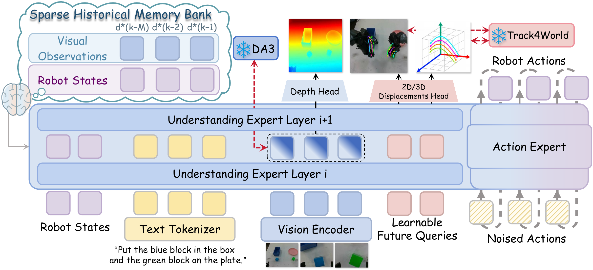

Shirt Folding
Task 01
Baseline (π₀.₅)
Ours
PROJECT PAGE
The video could not be loaded. Open the video directly.
Successful manipulation requires understanding scene geometry and anticipating how scene points will move during interaction. Action imitation supervises robot commands, but does not explicitly shape the vision-language-action (VLA) model’s representations of these spatial and temporal relationships. We present Flow2Act, a framework that uses geometrically grounded motion anticipation to condition action generation. Within a pretrained VLA, learnable future queries integrate current visual features with sparse observations from previous replanning steps. A frozen geometry teacher grounds the visual features via distillation, while paired 2D trajectories and relative-scale 3D displacement targets supervise the queries to anticipate where current scene anchors will move over the action horizon. The same query representations condition the native action generator through their layer-wise key-value states, providing a shared pathway for motion prediction and control. At deployment, Flow2Act uses only RGB observations, robot states, and decision history, without teacher networks and dense prediction heads. Evaluations across four pretrained VLA backbone and three simulation benchmarks show aggregate success gains over the corresponding base policies, complemented by experiments on five real-world manipulation tasks.

Both rollouts play at 1×. The shorter rollout holds its final frame.
Parentheses show percentage-point gains over the paired backbone.
Success rates across four suites. Avg. is the mean across the suites.
| Model | Spatial | Object | Goal | Long | Avg. |
|---|---|---|---|---|---|
| X-VLA | 98.20 | 98.60 | 97.80 | 97.60 | 98.10 |
| ABot-M0 | 98.80 | 99.80 | 99.00 | 96.60 | 98.60 |
| StarVLA-OFT (Qwen3-VL) | 97.80 | 98.60 | 96.20 | 93.80 | 96.60 |
| Galaxea G0.5 | 98.40 | 100.00 | 98.60 | 98.60 | 98.90 |
| GR00T-N1.7 | 98.20 | 99.00 | 98.00 | 88.40 | 95.90 |
| Ours (GR00T-N1.7) | 99.40 | 99.80 | 99.80 | 94.80 | 98.45 (+2.55) |
| π₀.₅ | 98.80 | 98.20 | 98.00 | 92.40 | 96.85 |
| Ours (π₀.₅) | 99.60 | 98.80 | 97.60 | 93.00 | 97.25 (+0.40) |
| Xiaomi-Robotics-0 | 98.80 | 100.00 | 98.80 | 97.20 | 98.70 |
| Ours (Xiaomi-Robotics-0) | 99.60 | 100.00 | 99.00 | 97.80 | 99.10 (+0.40) |
Zero-shot evaluation under seven perturbations. Total is the overall benchmark score.
| Model | Camera | Robot | Language | Light | Background | Noise | Layout | Total |
|---|---|---|---|---|---|---|---|---|
| X-VLA | 23.40 | 89.70 | 75.70 | 88.20 | 96.00 | 62.70 | 71.80 | 71.40 |
| ABot-M0 | 60.40 | 67.90 | 86.40 | 96.20 | 91.60 | 86.40 | 82.60 | 80.50 |
| StarVLA-OFT (Qwen3-VL) | 47.00 | 60.10 | 87.00 | 96.30 | 95.30 | 73.10 | 79.20 | 75.00 |
| GR00T-N1.7 | 47.65 | 30.06 | 81.26 | 92.99 | 94.80 | 76.08 | 70.43 | 68.31 |
| Ours (GR00T-N1.7) | 60.03 | 80.06 | 86.99 | 97.64 | 96.47 | 78.14 | 80.85 | 80.39 (+12.08) |
| π₀.₅ | 78.40 | 73.60 | 80.80 | 96.20 | 94.10 | 89.00 | 84.50 | 84.40 |
| Ours (π₀.₅) | 84.60 | 84.00 | 84.19 | 97.96 | 96.29 | 90.38 | 86.30 | 87.48 (+3.08) |
| Xiaomi-Robotics-0 | 40.22 | 55.63 | 89.02 | 94.51 | 90.43 | 86.78 | 75.87 | 74.50 |
| Ours (Xiaomi-Robotics-0) | 58.61 | 68.26 | 92.48 | 96.72 | 96.53 | 88.24 | 81.51 | 81.73 (+7.23) |
Success rates for bimanual manipulation under clean and randomized conditions.
| Model | Clean | Random |
|---|---|---|
| X-VLA | 72.8 | 72.8 |
| ABot-M0 | 86.1 | 85.1 |
| StarVLA | 88.2 | 88.3 |
| RynnVLA-Latent | 88.7 | 88.4 |
| Galaxea G0.5 | 93.7 | 92.8 |
| π₀.₅ | 82.7 | 76.8 |
| Ours (π₀.₅) | 87.3 (+4.6) | 82.6 (+5.8) |
| LingBot-VLA 2.0 | 93.5 | 92.8 |
| Ours (LingBot-VLA 2.0) | 94.0 (+0.5) | 93.6 (+0.8) |